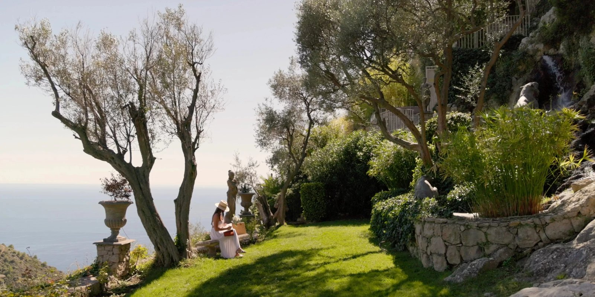
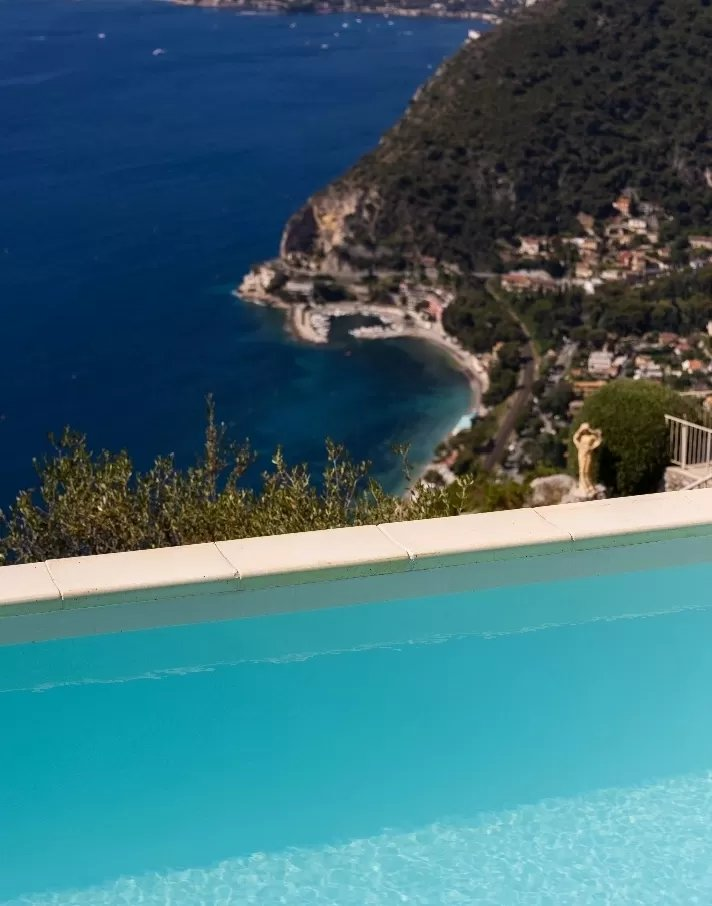

Château de la Chèvre d'Or, avis : le 5 étoiles suspendu au-dessus d'Èze
Ce n'est pas un hôtel, c'est un village. Quarante-cinq clés dispersées dans les ruelles piétonnes d'Èze, à quatre cents mètres au-dessus de la Méditerranée, et une table à deux étoiles MICHELIN au sommet. Avec une conséquence que personne n'écrit : la maison ferme l'hiver.

Les jardins en terrasses tombent vers la Méditerranée, quatre cents mètres plus bas. Photo : site officiel de la maison.
TL;DR : l'essentielScore LMHS 9,1/10, Indice Azur 4,7/5
- Quarante-cinq clés, neuf catégories, et aucun bâtiment principal. Les chambres et suites sont réparties dans des maisons du village médiéval rachetées et réunies depuis 1953. Certaines suites ont leur piscine ou leur jacuzzi privé.
- Quatre tables, dont deux étoiles MICHELIN. La Chèvre d'Or est dirigée depuis 2024 par Tom Meyer, Meilleur Ouvrier de France 2023, avec le pâtissier Florent Margaillan. La salle a été redessinée en 2026 par Caroline Tissier. La maison est aussi membre des Grandes Tables du Monde.
- La maison est saisonnière, et c'est l'information la plus utile de cette page. La fermeture annuelle a couru du 3 novembre 2025 au 31 mars 2026, et le gastronomique sert du 9 avril au 24 octobre 2026. On ne vient pas ici en février.
Avis documentaire. Nous n'avons pas dormi à la Chèvre d'Or. Les éléments de cette page ont été relevés le 21 août 2026 sur le site officiel de la maison et recoupés avec le Guide MICHELIN.
Un village médiéval devenu hôtel, et non l'inverse
La particularité de la Chèvre d'Or se comprend avant d'entrer, et elle décide de tout le reste. Ce n'est pas un bâtiment. C'est un ensemble de maisons du village d'Èze, rachetées une à une depuis 1953, restaurées et reliées, dont les chambres se dispersent dans les ruelles piétonnes accrochées au rocher, à quatre cents mètres au-dessus de la mer, entre Nice et Monaco.
L'histoire que raconte la maison est belle et elle est datée : en 1956, Walt Disney aurait suggéré à son ami Robert Wolf d'édifier ici un établissement d'exception. Le principe qu'invoque la Chèvre d'Or pour décrire sa propre architecture est emprunté à Jean Nouvel : « on ne construit pas un espace mais dans un espace ». La formule dit exactement ce qui se passe : la maison n'a pas été bâtie contre le village, elle a épousé ses volumes existants.
Èze doit par ailleurs une part de sa notoriété à Friedrich Nietzsche, qui empruntait le sentier montant d'Èze-bord-de-mer jusqu'au village et y aurait conçu une partie d'Ainsi parlait Zarathoustra. Le chemin porte aujourd'hui son nom, et une suite de l'hôtel aussi. Précision utile puisque la confusion est fréquente : Ainsi parlait Zarathoustra n'est pas une nouvelle, mais un poème philosophique en quatre parties, publié entre 1883 et 1885.
La conséquence pratique de ce parti pris mérite d'être dite, parce qu'elle surprend à l'arrivée. Un village piétonnier signifie des escaliers, des ruelles étroites et des distances à pied entre la réception, votre chambre et la table du soir. C'est le prix, parfaitement assumé par la maison, d'une intégration que personne d'autre sur la Riviera ne peut proposer. Demandez à la conciergerie comment vos bagages arrivent, et prévoyez des chaussures qui tiennent.
Les jardins en terrasses, le vrai sujet de la maison
Ce que l'on vient chercher ici tient en une image : des jardins qui descendent en terrasses successives vers le vide, plantés d'oliviers, ponctués de statues de pierre, de vasques et de bassins, avec la Méditerranée quatre cents mètres plus bas et le regard qui porte jusqu'à l'horizon. Vergers, aromatiques, jardins suspendus, terrasses au couchant : la maison a ajouté peu de choses à un site qui n'en demandait pas.
La piscine panoramique prolonge cette sensation de suspension, posée sur une terrasse qui domine l'ensemble. C'est aussi le point sur lequel nous devons être précis, parce que nous l'avons déjà écrit dans notre sélection des hôtels de charme de la Côte d'Azur : ce bassin n'est pas chauffé. Compte tenu du calendrier d'ouverture de la maison, la question ne se pose vraiment qu'en avril, en mai et en octobre, aux deux extrémités de la saison. Les suites Nietzsche et Panoramique disposent, elles, de leur propre piscine ou jacuzzi privé.

Oliviers, statues et vasques sur l'une des terrasses du domaine. Photo : site officiel de la maison.
Quarante-cinq clés, neuf catégories
La maison publie neuf catégories, ce qui est considérable pour 45 clés et dit bien qu'aucune chambre ne ressemble à sa voisine. Trois catégories de chambres, Tradition, Élégance et Deluxe. Puis six niveaux de suites, Junior Suites, Suites Executive, Suites Prestige, Suite Panoramique, Suite Nietzsche et Suite Royale.
Le vrai critère de choix n'est pas la surface, il est double : l'orientation et la position dans le village. Certaines chambres regardent la mer, d'autres l'arrière-pays et les contreforts qui montent vers le Mercantour. Et comme les maisons sont dispersées, deux catégories identiques peuvent se trouver à cinq minutes de marche l'une de l'autre. Les deux questions à poser à la réservation sont donc toujours les mêmes : la vue, et la distance jusqu'aux tables.
Notre recommandation. Pour un premier séjour, une Junior Suite côté mer suffit à comprendre le lieu. Si le budget le permet, la Suite Nietzsche ou la Suite Panoramique, pour la piscine privée et la vue depuis le lit.

La Suite Nietzsche, l'une des deux catégories dotées d'un bassin privé. Photo : site officiel de la maison.
Quatre tables, et deux étoiles au sommet
La maison exploite quatre adresses distinctes, et il vaut mieux ne pas les confondre. La Chèvre d'Or est le restaurant gastronomique, distingué de deux étoiles au Guide MICHELIN, dont la salle a été entièrement redessinée en 2026 par l'architecte d'intérieur Caroline Tissier. Les Remparts tient le registre bistronomique, Le Café du Jardin celui du déjeuner en extérieur, et Le Bar occupe une salle de pierre ouverte sur une terrasse.
La cuisine est dirigée depuis 2024 par Tom Meyer, Meilleur Ouvrier de France 2023, arrivé en succession d'Arnaud Faye, et entré en 2025 au classement The Best Chef Awards. Le pâtissier est Florent Margaillan. Ce que décrivent ceux qui y ont dîné, Yonder en tête, est une cuisine sans plat signature, revendiquée comme mouvante et guidée par les saisons : maîtrise technique, jus et sauces d'une intensité marquée, associations lisibles plutôt que démonstratives. Moule de Méditerranée, morilles et pin sylvestre ; artichaut épineux et tagliatelles de seiche ; thon rouge, shiso et concombre.
Deux distinctions complètent le tableau et méritent d'être citées, parce qu'elles ne sont pas données à beaucoup de maisons : la Chèvre d'Or est membre des Grandes Tables du Monde, et l'établissement est titulaire de la Clé Verte, label environnemental de l'hôtellerie.
Ce que personne n'écrit : la maison ferme l'hiver
C'est l'information la plus utile de cette page, et elle est absente de la quasi-totalité des articles consacrés à la Chèvre d'Or. L'établissement est saisonnier. La fermeture annuelle a couru du 3 novembre 2025 au 31 mars 2026. Pour la saison 2026, le restaurant gastronomique sert du 9 avril au 24 octobre, et les autres tables suivent leur propre calendrier, plus resserré encore.
Cela n'a rien d'un reproche : à quatre cents mètres d'altitude sur un rocher exposé, l'hiver azuréen n'est pas celui des cartes postales, et beaucoup de maisons perchées font le même choix. Mais cela change tout pour qui planifie. Un week-end à Èze en février se prépare ailleurs, et un séjour d'octobre se réserve tôt, puisque la saison se referme. Vérifiez les dates d'ouverture avant de poser des congés, pas après.
Notre note, et où elle place la maison
Nous attribuons au Château de la Chèvre d'Or un Score LMHS de 9,1/10 et un Indice Azur de 4,7/5. Le score n'est pas nouveau : c'est exactement celui que porte la maison dans notre sélection des hôtels de charme de la Côte d'Azur, où elle est deuxième sur douze. Sur ce site, une même adresse ne porte jamais deux notes différentes.
Ce qui pousse la note très haut : une situation que personne ne peut reproduire, un bâti fondu dans un village médiéval classé parmi les plus beaux de France, des jardins en terrasses d'une qualité rare, deux étoiles MICHELIN sur place, une appartenance à Relais & Châteaux et aux Grandes Tables du Monde, et quarante-cinq clés seulement pour tout cela.
Ce qui la retient sous les 9,3 du Cap Estel, premier de notre palmarès azuréen et voisin d'Èze-bord-de-mer : la saisonnalité, qui ferme la maison cinq mois par an, la piscine panoramique non chauffée, et la dispersion des chambres dans un village piétonnier, qui est une splendeur pour le regard et une contrainte pour les jambes et les valises. Le Cap Estel, sur sa péninsule privée, ne demande rien de tout cela.
L'Indice Azur à 4,7/5 mesure autre chose : ce qui fait qu'une adresse appartient à la Côte d'Azur et non à une riviera interchangeable. La hauteur, la lumière, le minéral, le rapport à la mer, l'ancrage dans un village. La Chèvre d'Or se situe tout en haut de cette échelle, très loin devant l' Hôtel Casarose à 3,9/5, qui joue une partition balnéaire et ouverte à l'année, exactement inverse.
Pourquoi nous ne publions aucun tarif
Il faut le dire clairement plutôt que d'aligner un chiffre commode. Les sources disponibles se contredisent. Yonder, qui a séjourné dans la maison, situe l'entrée de gamme à partir de 450 €. Notre propre sélection azuréenne, publiée plus tôt, relevait 982 € en basse saison et 2 610 € en haute saison. L'écart est trop large pour être arbitré depuis un bureau, et il s'explique probablement par la saison, la catégorie et le canal de réservation.
Nous préférons donc ne rien publier ici et renvoyer au moteur de la maison, comme nous l'avons fait pour l'Hôtel de Toiras. Une fourchette fausse est plus nuisible qu'une fourchette absente, surtout dans un établissement où neuf catégories et cinq mois de saison font varier le prix d'un facteur considérable.
Le mot de LucasUn hôtel qui a renoncé à être un bâtiment
La plupart des grandes maisons de la Riviera ont choisi le contraire de ce qu'a fait la Chèvre d'Or : un volume unique, une entrée monumentale, un parc clos, une plage privée. Ici, on a renoncé au bâtiment. On a racheté des maisons de village pendant soixante-dix ans et on les a laissées là où elles étaient, avec leurs escaliers, leurs murs de pierre et leurs distances. Ce renoncement produit deux choses en même temps, et c'est ce qui rend l'adresse intéressante à écrire. Une beauté que personne ne peut copier, parce qu'elle appartient au village autant qu'à l'hôtel. Et une somme de petites contraintes que le luxe sert d'ordinaire à supprimer : marcher, monter, porter, et fermer cinq mois par an. Ceux qui viennent pour le confort sans friction seront mieux au bord de l'eau. Ceux qui viennent pour le lieu comprendront en montant. Une réserve d'usage, que je dois écrire : nous n'avons pas dormi ici. L'architecture, les catégories, les tables, les distinctions et le calendrier se vérifient sur pièces. Le service, lui, ne se juge pas depuis un bureau, et nous ne le jugeons pas.
Lucas Lecoq, rédacteur en chef
Infos pratiques et accès
| Adresse | Rue du Barri, 06360 Èze Village |
| Téléphone | +33 4 92 10 66 66 |
| Réservations | reservation@chevredor.com |
| Restaurant | restaurant@chevredor.com · +33 4 92 10 66 61 |
| Conciergerie | Nicolas Amelot · concierge@chevredor.com · +33 4 92 10 66 60 |
| Classement | 5 étoiles, Relais & Châteaux, Les Grandes Tables du Monde, Clé Verte |
| Capacité | 45 chambres et suites, en 9 catégories, dispersées dans le village |
| Suites avec bassin privé | Suite Nietzsche et Suite Panoramique |
| Tables | La Chèvre d'Or, 2 étoiles MICHELIN · Les Remparts, bistronomique · Le Café du Jardin · Le Bar |
| Chef | Tom Meyer, Meilleur Ouvrier de France 2023, arrivé en 2024. Pâtissier : Florent Margaillan |
| Saison 2026 | Fermeture annuelle du 3 novembre 2025 au 31 mars 2026. Restaurant gastronomique du 9 avril au 24 octobre 2026 |
| Piscine | Panoramique, non chauffée |
| Accès | Village piétonnier, escaliers et ruelles. Nice à 20 minutes, Monaco à 15 minutes |
| Tarifs | Non publiés sur cette page, les sources se contredisent |
| Score LMHS | 9,1/10 · Indice Azur 4,7/5 |
Aux alentours, quatre choses valent le détour et prolongent le séjour : le chemin de Nietzsche, qui descend du village à la mer et se monte de préférence tôt le matin ; le Jardin exotique d'Èze, au sommet du rocher ; la parfumerie Fragonard, au pied du village ; et les villages perchés de l'arrière-pays, Peille, Peillon et Sainte-Agnès.
FAQ : Château de la Chèvre d'Or
Le Château de la Chèvre d'Or est-il ouvert toute l'année ?
Non, et c'est l'information la plus utile avant de réserver. La maison est saisonnière. La fermeture annuelle a couru du 3 novembre 2025 au 31 mars 2026. Pour la saison 2026, le restaurant gastronomique La Chèvre d'Or sert du 9 avril au 24 octobre, les autres tables suivant un calendrier plus resserré encore. Un séjour à Èze en hiver suppose donc une autre adresse.
Le restaurant de la Chèvre d'Or est-il étoilé ?
Oui, deux étoiles au Guide MICHELIN. La cuisine est dirigée depuis 2024 par Tom Meyer, Meilleur Ouvrier de France 2023, arrivé en succession d'Arnaud Faye et entré en 2025 au classement The Best Chef Awards. Le pâtissier est Florent Margaillan. La salle a été redessinée en 2026 par l'architecte d'intérieur Caroline Tissier. La maison compte trois autres adresses : Les Remparts, Le Café du Jardin et Le Bar, et elle est membre des Grandes Tables du Monde.
Combien de chambres compte le Château de la Chèvre d'Or ?
45 chambres et suites, réparties en neuf catégories : Chambres Tradition, Élégance et Deluxe, puis Junior Suites, Suites Executive, Suites Prestige, Suite Panoramique, Suite Nietzsche et Suite Royale. Particularité de la maison : elles ne sont pas dans un bâtiment unique mais dispersées dans des maisons du village médiéval, rachetées et réunies depuis 1953.
Quelle chambre réserver au Château de la Chèvre d'Or ?
Le critère n'est pas la surface, il est double : l'orientation, mer ou arrière-pays, et la position dans le village, puisque les maisons sont dispersées et que deux chambres de même catégorie peuvent être à plusieurs minutes de marche l'une de l'autre. Pour un premier séjour, une Junior Suite côté mer. Pour l'expérience complète, la Suite Nietzsche ou la Suite Panoramique, les deux catégories dotées d'un bassin privé.
Combien coûte une nuit au Château de la Chèvre d'Or ?
Nous ne publions pas de tarif sur cette page, parce que les sources se contredisent. Yonder, qui a séjourné dans la maison, situe l'entrée de gamme à partir de 450 €. Notre propre sélection azuréenne, publiée plus tôt, relevait 982 € en basse saison et 2 610 € en haute saison. L'écart est trop large pour être arbitré depuis un bureau : avec neuf catégories et une saison de sept mois, le prix varie d'un facteur considérable. Passez par le moteur de réservation de la maison pour un tarif ferme à vos dates.
Y a-t-il une piscine au Château de la Chèvre d'Or ?
Oui, une piscine panoramique posée sur une terrasse qui domine le domaine, avec vue sur la Méditerranée. Elle n'est pas chauffée, ce que nous signalons également dans notre sélection des hôtels de charme de la Côte d'Azur. Compte tenu de la saison d'ouverture, d'avril à octobre, la question se pose surtout aux deux extrémités du calendrier. Deux catégories disposent par ailleurs de leur propre bassin : la Suite Nietzsche et la Suite Panoramique.
Méthode et sources
Avis documentaire, sans séjour de contrôle, et nous ne prétendons pas le contraire. Le Score LMHS sur 10 relève de la grille LMHS Destination ; il est repris à l'identique de notre sélection des hôtels de charme de la Côte d'Azur, où la maison est deuxième sur douze, afin qu'une même adresse ne porte jamais deux notes différentes sur ce site. L'Indice Azur sur 5 est celui de nos avis azuréens, déjà employé pour l'Hôtel Casarose. Adresse, téléphone, courriels, capacité, catégories de chambres, tables, distinctions et calendrier d'ouverture relevés le 21 août 2026 sur le site officiel de la maison, page par page, et recoupés avec le Guide MICHELIN et la fiche Relais & Châteaux. Le récit de séjour, la mention de Walt Disney et de Robert Wolf en 1956, la rénovation de la salle par Caroline Tissier et les plats cités proviennent de l'article de Yonder signé Suzanne Fischer, cité comme tel. Aucun tarif n'est publié : Yonder annonce 450 €, notre propre sélection azuréenne 982 € en basse saison, et l'écart n'est pas arbitrable sur pièces. Aucune note de plateforme d'avis n'est reprise : nous ne collectons pas d'avis clients, et un média ne publie pas en données structurées une moyenne qu'il n'a pas produite. Aucun partenariat commercial, aucune affiliation, aucun séjour offert. Photographies : site officiel de la maison.
Pour aller plus loin
- Hôtels de charme sur la Côte d'Azur : 12 adresses testées, où la Chèvre d'Or est deuxième
- Les 50 meilleurs hôtels et spas de France, palmarès national 2026
- Meilleur spa sur la Côte d'Azur : 10 adresses classées
- Hôtel Casarose, avis : le 4 étoiles qui ne ferme jamais, la partition inverse
- Hôtel Sezz Saint-Tropez, avis : le 5 étoiles design de la route des Salins
- Notre méthode, les grilles de notation et les règles d'indépendance